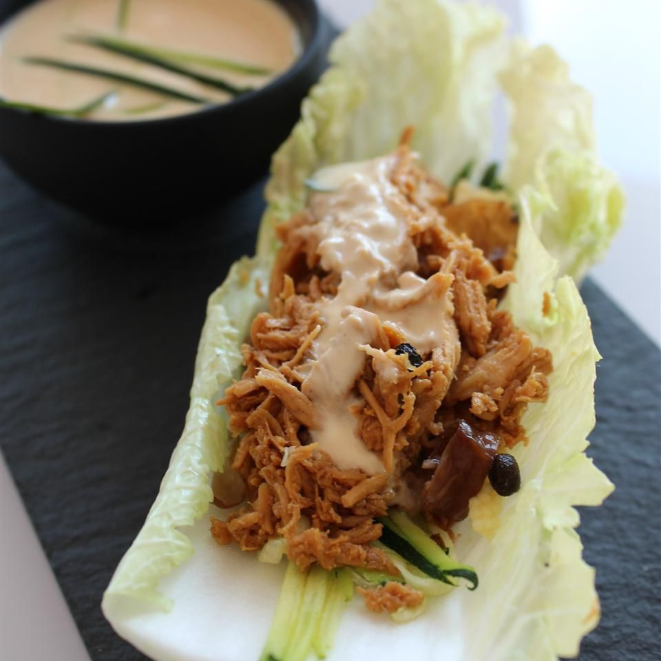

Home
Chicken Lettuce Wraps

Description
These chicken lettuce wraps are made with shredded roast chicken, carrots,
water chestnuts, and a creamy Asian-style dressing. They're easy to prepare, refreshing, and great
for summer nights when you don't want to cook.
Ingredients
-
1 deli-roasted chicken, meat removed and shredded
-
½ cup shredded carrots
-
½ cup chopped water chestnuts
-
⅓ cup Asian-style salad dressing
-
¼ cup plain Greek yogurt
-
1 pinch red pepper flakes, or to taste (Optional)
Instructions
- Mix chicken, carrots, and water chestnuts together in a large bowl.
- Stir salad dressing and yogurt together in a separate bowl until smooth; pour over the
chicken mixture and toss to coat.
- Spoon chicken mixture into lettuce leaves. Season with red pepper flakes.